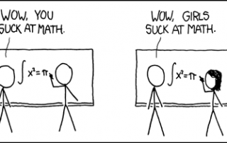

Week 6 Cultural Blog
Stereotype threat
When I was a freshman in college, my original plan was to study computer science and graduate with a CS degree. I remember the first class in my intro to CS, a student asked a programming question that was WAY over my head. I was confused as to how he could even ask this question, seeing as how it was the first day of class and this is supposed to be an intro class. The professor proceeded to have a lengthy discussion about the question and as I looked around, everyone seemed to be understanding what was being talked about (althought, this could have been sterotype threat as well. "Of course everyone else knows what is going on and I don't." This may not have been the actual case.) I also happened to be the only african-american in this class, so stereotype threat immediately hit me. At that time, I felt that I was clearly not as smart as my classmates, and it lead to me not reaching out to classmates as much as I feel that I should have. The feeling of not begin smart enough for this class persisted throughout the semester, I would even joke about it to my roommate and other college friends.
As you can imagine, I performed poorly in the class and ultimately ended up changing my major. While I feel there were many factors that lead to this, stereotype threat was definitely one of them. I always wonder that maybe, if I didn’t have that initial feeling creep in on me, I would of reached out for helped more and been able to catch up with everyone.
While I haven’t read about it in scientific studies, I feel like I have always known that this type of condition exists and I feel that I do well at handling it now. The best strategy is to not focus on what emotions you are feeling at the time, and just try to look at the facts of the situation and come up with a logical plan of action to get the results that you want.
An example of this would be me looking at the situation in college, realizing that maybe I am a little bit behind, but not just give up because “black kids are good in CS”, and reach out to professors and TA’s to take the extra time nesscary to make sure I get caught up. Really looking at the situation from a logical standpoint is a great way to deal with stereotype threat, and many other emotional-based responses.